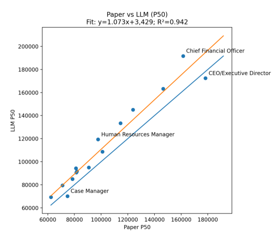
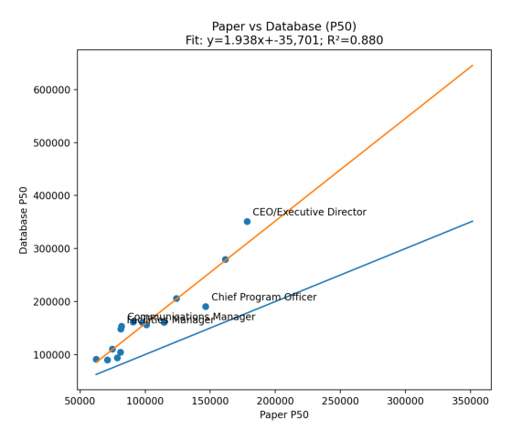
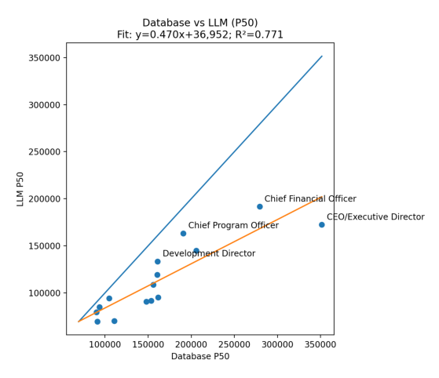
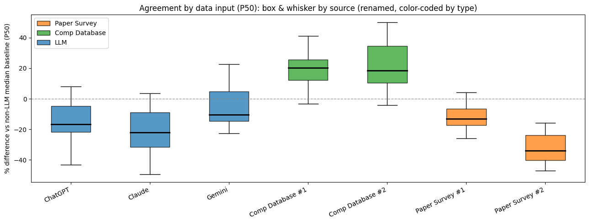

Can LLMs Produce Reliable Market Benchmarks? A Small Pilot Study
Question: Can LLMs produce market benchmarks that are reliable enough to inform real compensation decisions (and if so, where does it break down)? Put another way: has AI gotten "good enough" to replace compiled surveys or comp databases?
TL;DR In a pilot test using 15 common nonprofit roles scoped to San Francisco nonprofits (25–50 FTE), LLM-generated market medians tracked “paper survey” benchmarks closely (high agreement on role ordering and relative differentials), but diverged more from leading national compensation databases, especially for executive roles. In other words, LLMs do a good job ranking pay rates between jobs but are probably less accurate at giving you a true “range” in the absence of other org context. My recommendation: use LLMs for quick triangulation (“do Controller or Sr. Director of Finance typically pay more at Oakland nonprofits?”), job-matching sanity checks, and early range development. Do not use them as a single source of truth for pricing decisions, and always calibrate with at least one traditional benchmark source, especially above the director level.
Context
If you’re a CPO or HR leader, you already know the pain points of market benchmarking:
- Comp databases or surveys are expensive and often sold in bundles
- Job matching takes time and still produces “depends who you ask” answers
- Scope and leveling differences can swamp the number you hoped would be definitive
- You need something fast enough to support real decisions, but defensible enough to stand up in leadership and comp committee conversations
At the same time, large language models (LLMs) can produce salary benchmarks in seconds. That’s both enticing and risky. The real question isn’t “can an LLM give you a number?” It’s “how accurate are those numbers compared to traditional sources?”
To explore this, I ran a small pilot comparing LLM-produced market medians to two categories of traditional benchmarking sources:
- Survey-style benchmarks (compiled survey outputs): I pulled two leading national or regional surveys typically used by Bay Area nonprofits
- Database-style benchmarks (leading national comp databases): I pulled from three widely used national compensation databases
I then ran three LLMs (ChatGPT, Claude, and Gemini) with a consistent market scope: San Francisco/Bay Area, nonprofits, 25–50 FTE, P50/median pay as the anchor point.
See the Appendix below for an example of the data gathered for a “Development Manager” role.
A quick note on language: for the purposes of this analysis, “accuracy” means “agreement with traditional sources under a comparable set of market parameters.” In compensation benchmarking, there is rarely a single “true” number; there are multiple legitimate answers depending on how the cut is defined and how the job is matched.
Method in Plain English
For each role, I created “consensus” estimates to reduce single-source noise:
- LLM consensus: average of the three LLM medians
- Survey consensus: median of the “paper survey” medians
- Database consensus: median of the database-style medians
Then I compared the consensus estimates as scatter plots (one dot per role). I used R² as a quick measure of agreement, a 45-degree line (perfect agreement) to show level differences, a fitted regression line to show systematic bias, and outlier labeling to identify which roles drove divergence.
This is deliberately not a “gotcha” test, but a practical question: if you’re benchmarking in the real world, does the LLM output behave like market data you already recognize?
Results: What the Data Showed
1. Paper surveys vs. LLMs: strongest agreement — R² = 0.94. Across roles, LLMs tracked survey-style medians closely. If a role priced higher in surveys, it tended to price higher in LLM outputs too.

2. Paper surveys vs. database-style benchmarks: solid agreement, more spread — R² = 0.88. Even traditional sources diverged meaningfully, especially as roles moved up-market in scope. This is a useful reminder that benchmarking tools are not interchangeable without careful cut alignment.

3. Database-style benchmarks vs. LLMs: weakest agreement — R² ≈ 0.77. LLMs did not reproduce database-style patterns as reliably, particularly at the senior end.


Where disagreement clustered: The biggest divergence showed up in executive and top-of-house roles (CEO/ED and CFO equivalents). Mid-level manager and professional roles were more stable across sources.
What that pattern usually means in practice: Executive roles have the highest variance in real life because scope is typically more ambiguous, incentives and total cash conventions vary, and organization-size elasticity is larger. Traditional databases often encode leveling and job architecture conventions in ways that LLM prompting does not consistently capture unless scope is specified very tightly. For example: you will benchmark a “VP of Finance” differently depending on whether the organization also has a CFO.
Interpretation: What This (Might) Mean for LLM Accuracy
The headline takeaway is not “AI is/is not ready to replace comp databases.” The takeaway is: LLMs can be directionally reliable for benchmarking common roles when scoped well, but they are more fragile than traditional sources when scope and leveling complexity increase.
LLMs appear strong on relative pricing. Across roles, LLM outputs tracked the “shape” of the market well against survey-style benchmarks. That’s useful because many real decisions rely on relative relationships — questions like:
- Are we preserving reasonable internal differentials?
- Does a draft range architecture look broadly aligned with market trends?
- Should we post a higher or lower range for a new role compared to an existing one?
LLMs appear weaker on database-style “cut fidelity.” Databases behave differently from survey-style sources because they embed specific job-leveling conventions, location factors, sector, org-size, and embedded job-matching logic. LLMs can approximate that, but ultimately they are a “black box” in the same way that comp databases can be — with even less insight into the methodology for how that particular number or range was created.
Executive roles are the “your mileage will vary” zone. If you’re a seasoned comp pro, the data in this little pilot study behaved as you might expect: the higher the scope ambiguity, the more sources diverged. If you’re setting executive pay, the cost of being wrong is large and the defensibility bar is high. LLMs can help you develop a directional hypothesis about pay rates, but not final decisions. I might use an LLM to get a general sense for “Nonprofit CEO pay in Louisville for orgs around $10M,” but wouldn’t use it for structure design or individual pay decisions.
Recommendations for HR Leaders and Consultants
Consider using LLMs for:
- Quick triangulation when you’re early in a project
- Role definition and job-matching sanity checks, especially when titles are misleading (“this role is titled Director but JD reads more like a Manager”)
- Drafting a first-pass range hypothesis for common roles, to be validated
- Identifying where scope questions matter most — if an LLM “range estimate” swings a lot when you change a particular variable, it is probably flagging a scoping problem
Do not use LLMs as a single source of truth for:
- Executive compensation ranges or placement decisions
- Any situation where you need to defend the benchmark to a board or comp committee
- Roles with high scope variability (CFO/Controller, COO, heads of development, heads of product/program) unless you have a tight scope spec and at least one traditional anchor point
How to make LLM benchmarking meaningfully safer:
- Lock the market definition in writing (geo, sector, org size, pay basis) and reuse it verbatim
- Run multiple models, not one (e.g., ChatGPT and Claude); look for convergence rather than a single answer
- Use the paid version of these tools (free versions are much less reliable)
- Calibrate: anchor to one trusted benchmark point from a traditional source, then use LLMs if you need to fill gaps
- Treat LLM outputs as hypotheses; test by adjusting one variable at a time to see what’s driving the number
- Keep an audit trail: prompts used, the assumptions you gave the model, and the outputs along the way
- Make sure you’ve turned off the “use my data for training” option in whichever model you use
Closing Thought
LLMs are already useful in benchmarking workflows; the mistake is treating them as a replacement for market data. In my “little pilot,” they performed surprisingly well against paper survey benchmarks under a defined market cut, and less well against database-style outputs. Unsurprisingly, the gaps were biggest with executive positions — where identifying the “right” pay rates are hardest anyway.
If you approach LLMs as a speed tool for triangulation and scoping, they might add real value. If you treat them as the final answer, you will eventually get burned — most likely at the executive level or in roles where scope is ambiguous.
If you’re thinking through how to integrate LLMs into your benchmarking workflow in a way that’s practical and defensible, I’m happy to compare notes; this is an area I’m actively developing thinking on. ben@thrulinecomp.com
Appendix: Sample Role Comparison — Development Manager
Market Parameters: San Francisco/Bay Area, Nonprofits, 25–50 FTE
| Source Type | Source (masked) | Market Scope Used | P50 (median) | Notes |
|---|---|---|---|---|
| LLM | ChatGPT | San Francisco; Nonprofit; 25–50 FTE | $95,000 | Prompted to target scope |
| LLM | Claude | San Francisco; Nonprofit; 25–50 FTE | $88,000 | Prompted to target scope |
| LLM | Gemini | San Francisco; Nonprofit; 25–50 FTE | $102,000 | Prompted to target scope |
| Survey-style | Survey A (national nonprofit survey) | Closest available cut | $101,503 | Masked source name |
| Survey-style | Survey B (regional nonprofit survey) | Closest available cut | $80,000 | Masked source name |
| Database-style | Comp database 1 (leading national platform) | San Francisco / org-size cut | $141,100 | Masked source name |
| Database-style | Comp database 2 (leading national platform) | San Francisco / org-size cut | $181,971 | Masked source name |
| Consensus | LLM average | N/A | $95,000 | Average of 3 LLM medians |
| Consensus | Survey median | N/A | $90,752 | Median of 2 survey-style medians |
| Consensus | Database median | N/A | $161,536 | Median of 2 database medians |
| Spread | Range across all sources | N/A | $101,971 | Max minus min across all sources |